Инструкция для настройки VOSTOK
Установка Linux на управляющую плату
Установка может отличаться от выбранной платы. Наиболее простой вариант установки для Raspberry.
Установка Linux на Raspberry Pi
Raspberry Pi OS Lite (32bit или 64bit) это рекомендуемый образ Linux, если вы используете Raspberry Pi. Официальный Raspberry Pi Imager - это самый простой способ загрузить образ на SD-карту.
- После загрузки, установки и запуска Raspberry Pi Imager откроется основное окно программы в котором нужно выбрать необходимые настройки для создания образа ОС:
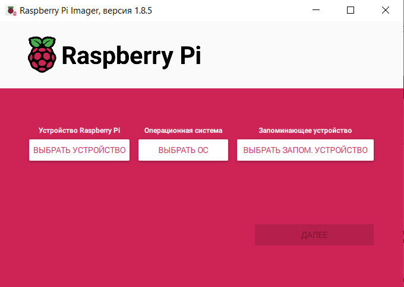
- Выберете плату на которую необходимо установить ОС:
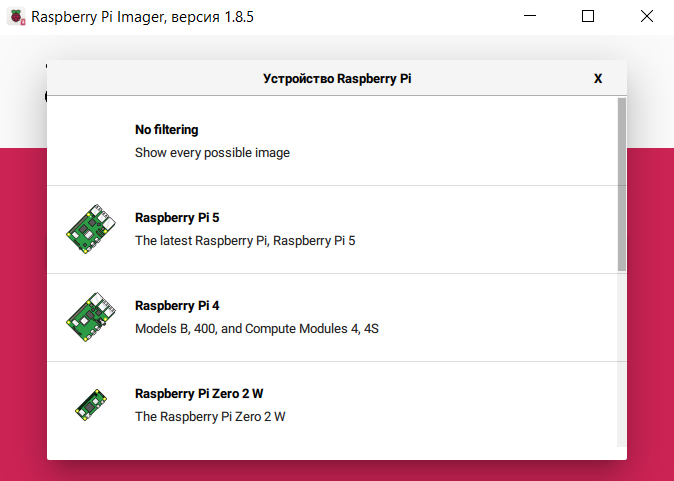
- Затем выберете необходимую версию
ОС Raspberry Pi OS Lite (32bit)(или 64-битный, если вы хотите использовать его вместо этого)Выбрать ОС -> Raspberry Pi OS (other) -> Raspberry Pi OS Lite (32bit):
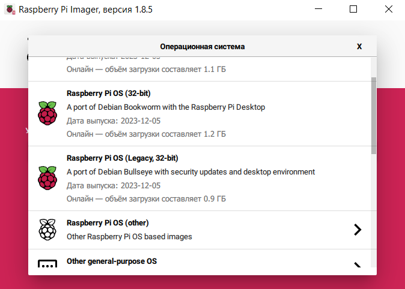
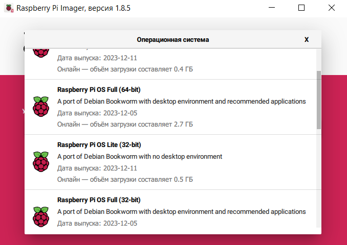
- Вернувшись в главное меню Raspberry Pi Imager, выберите соответствующую SD-карту, на которую вы хотите записать образ.
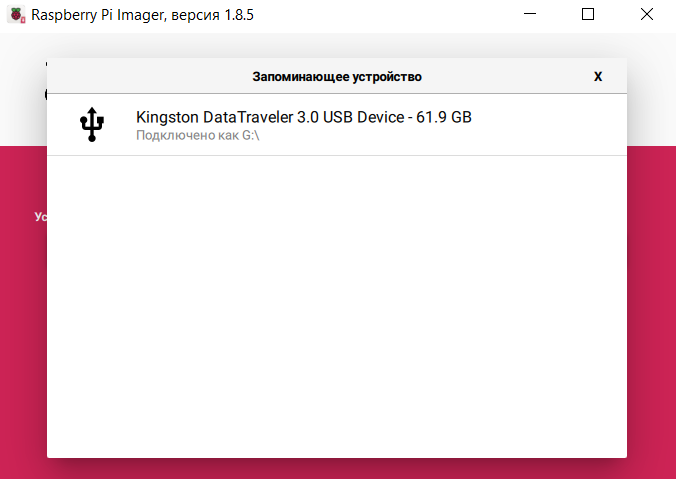
- На данном этапе должны быть заполнены все поля, переходим далее:
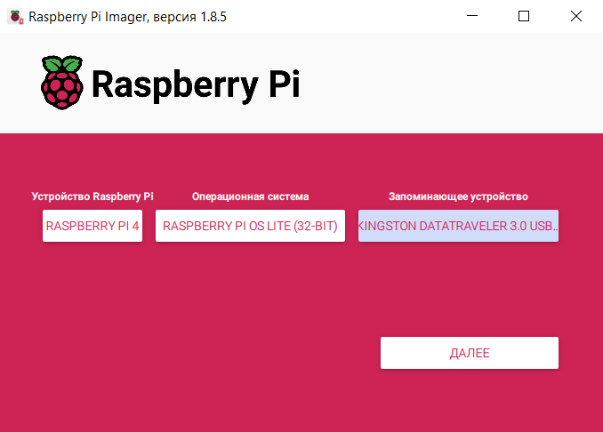
- Настраиваем дополнительные параметры образа:
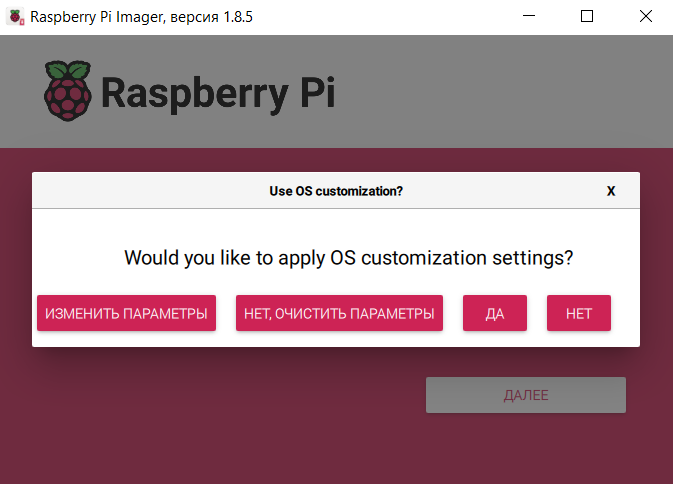
- Обязательно зайдите в расширенную опцию и включите SSH и настройте Wi-Fi.
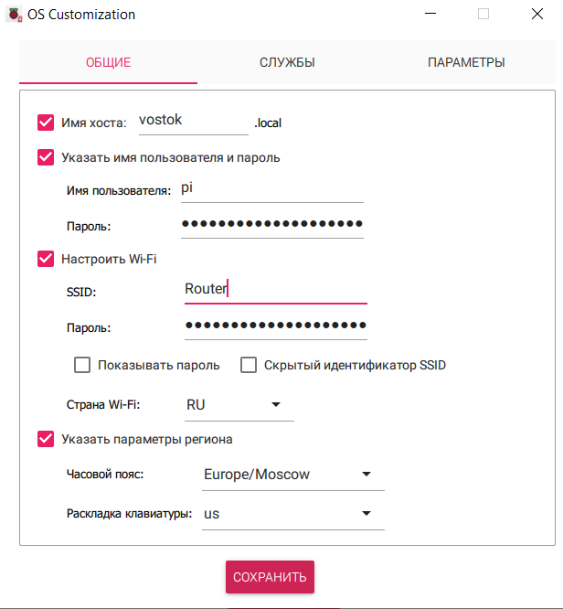
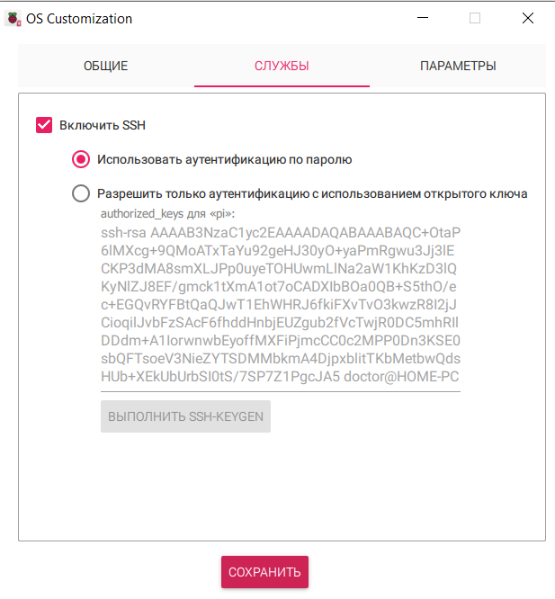
- Установите SD карту в Raspberry и подключите питание
Если вам нужна дополнительная помощь по использованию Raspberry Pi Imager, пожалуйста, ознакомьтесь с официальной документацией.
Установка Linux на Orange Pi3 LTS (в разработке)
ПО для Windows:
- Текстовый редактор (например: Блокнот, Notepad++ или VSCode)
- Программа для создания загрузочных дисков (например Rufus)
Подключение к управляющей плате
Наиболее популярным вариантом подключения к управляющей плате по SSH (Secure Shell — «безопасная оболочка») является Putty. Для взаимодействия с файлами управляющей платы используем FileZilla. IP адрес можно узнать через настройки роутера или через Advanced IP Scanner.
Определение IP адреса
Запускаем сканирование через Advanced IP Scanner
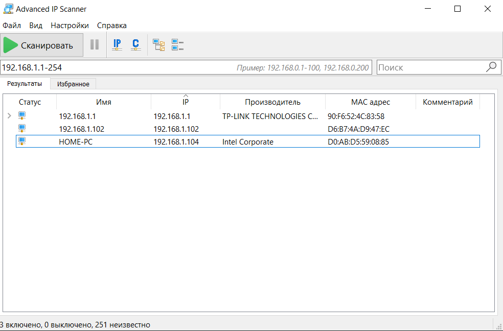
Подключение по SSH через Putty
Запускаем Putty. Вводим IP адрес, желаемое имя сессии и сохраняем.
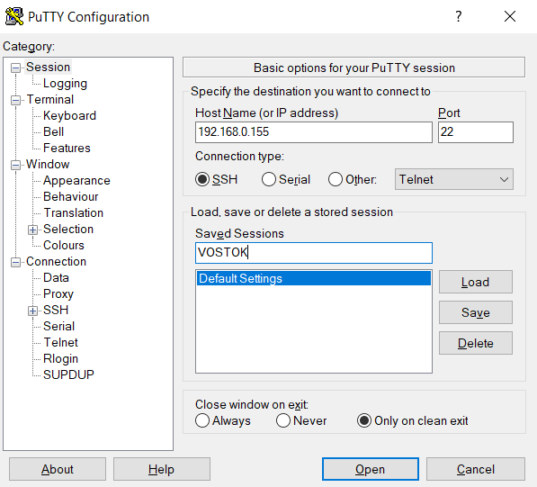
Открываем SSH сессию. При первом подключении будет уведомление безопасности, принимаем его.
Вводим логин и пароль учетной записи Linux, стандартно логин: pi, пароль: raspberry
Выдача необходимых прав пользователя Linux
Установка Klipper Installation And Update Helper (KIAUH)
KIAUH - это скрипт, который помогает вам установить Klipper в операционную систему Linux. GitHub
📢 Отказ от ответственности: Использование этого скрипта происходит на ваш страх и риск!
- Шаг 1: Чтобы загрузить этот скрипт, необходимо установить git. Если у вас еще не установлен git или вы не уверены, выполните следующую команду:
sudo apt-get update && sudo apt-get install git -y
- Шаг 2: После установки git используйте следующую команду, чтобы загрузить KIAUH в свой домашний каталог:
&& ~ cd git clone https://github.com/dw-0/kiauh.git
- Шаг 3: Затем, запустите KIAUH, выполнив следующую команду:
./kiauh/kiauh.sh
- Шаг 4: Теперь вы должны оказаться в главном меню KIAUH. Вы увидите несколько действий на выбор в зависимости от того, что вы хотите сделать. Чтобы выбрать действие, просто введите соответствующий номер в приглашение "Выполнить действие" и подтвердите нажатием ENTER.
Установка компонентов через KIAUH
Основные компоненты для установки:
Klipper
Moonraker
Fluidd
Дополнительные компоненты устанавливаются по желанию
Настройка и установка прошивки для материнской платы
Настройка прошивки
Переходим обратно в pytty и выполняем следующие команды (команды можно копировать, в putty они вставляются Правой кнопкой мыши):
cd ~/klipper
make clean
make menuconfig
Нажимаем Q, сохраняя внесенные изменения и компилируем прошивку:
В структуре меню необходимо выбрать ряд пунктов.
- Выберите
Enable extra low-level configuration options. - В
micro-controller architectureустановитеSTMicroelectronics STM32 - В
Processor modelвыберитеSTM32F446илиSTM32F429(зависит от микроконтроллера вашей материнской платы) - В
Bootloader offsetустановите32KiB bootloader - В
Clock Referenceвыберите12 MHz crystal(для STM32F446) или8 MHz crystal(для STM32F429) - В
Communication interfaceустановитеUSB (on PA11/PA12)(примечание: если вы собираетесь использовать UART вместо USB, то читайте документацию BigTreeTech)
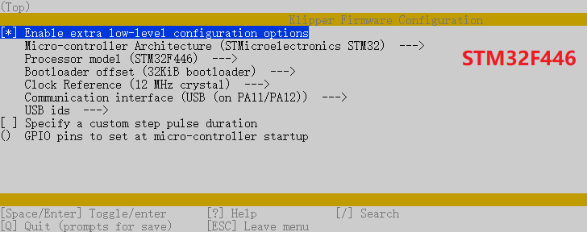
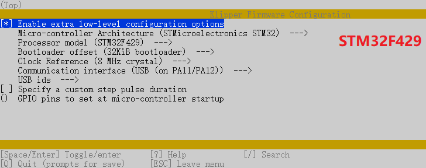
Нажимаем Q, сохраняя внесенные изменения и компилируем прошивку:
make
Если все прошло успешно, putty в консоли сообщит:
Version: v0.9.1-142-g02ece242-20210113_003503-fluiddpi
Preprocessing out/src/generic/armcm_link.ld
Linking out/klipper.elf
Creating hex file out/klipper.bin
Это означает что прошивка скомпилировалась и находится в папке /home/pi/klipper/out/klipper.bin
Установка прошивки
Существует несколько вариантов установки этого файла прошивки на устройство Octopus.
Вариант 1: Установка прошивки с использованием SD-карты
Работает независимо от подключения по USB или UART Необходима microSD карта Переименуем файл в firmware.bin выполнив команды:
cd ~/klipper
mv out/klipper.bin out/firmware.bin
Важно: Если файл не переименован, прошивка не обновится. Загрузчик ищет файл с именем firmware.bin.
Запускаем WinSCP, подключаемся к управляющей плате, скачиваем firmware.bin (полный путь: /home/pi/klipper/out/firmware.bin).
- Форматируем microSD карту в формате FAT32
- Копируем
firmware.binна microSD - Установливаем microSD и перезагружаем материнскую плату
- Через несколько секунд Octopus должен быть прошит
Вы можете подтвердить, что прошивка прошла успешно, запустив программу ls /dev/serial/by-id. Если прошивка прошла успешно, теперь должно отображаться устройство klipper, аналогичное:
картинка::::::
(примечание: этот тест неприменим, если прошивка была скомпилирована для UART, а не для USB)
Важно: Если Octopus не питается от сети 12-24 В, Klipper не сможет взаимодействовать с драйверами TMC через UART, и Octopus автоматически отключится.
Вариант 2: Установка прошивки через DFU (без SD-карты)
Требуется USB-подключение Требуется установка дополнительной перемычки на Octopus НЕ требует SD-карты
- Отключаем питание материнской платы
- Устанавливаем перемычку BOOT0
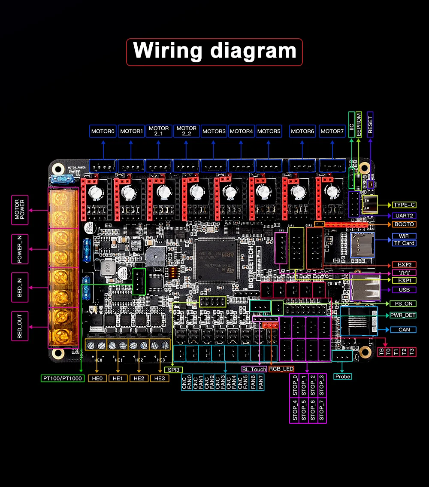
- Подключаем материнскую к управляющей плате
- Подключаем питание материнской платы
- Находим идентификатор устройства. Обычно устройство называется
STM Device in DFU mode.
cd ~/klipper
lsusb
- Если вы не видите устройство DFU в списке, нажмите кнопку
Resetрядом с разъемом USB и запуститеlsusbеще раз. - Запустите
make flash FLASH_DEVICE=1234:5678, заменив1234: 5678идентификатором из предыдущего шага. Обратите внимание, что идентификатор представлен в шестнадцатеричной форме; он содержит только цифры0-9и буквыA-F. - Отключаем питание материнской платы и снимаем перемычку BOOT
- Включаем питание материнской платы
???? мало просто перемычки между +3.3V и BOOT0, нужно еще поставить перемычку между BOOT1 и GND, найти их можно на EXP2 - 5 и 9 контакт соответственно. И о чудо, все заработает как указано в инструкции.
Вы можете подтвердить, что прошивка прошла успешно, запустив программу ls /dev/serial/by-id. Если прошивка прошла успешно, теперь должно отображаться устройство klipper, аналогичное:
(примечание: этот тест неприменим, если прошивка была скомпилирована для UART, а не для USB)